L'intelligence artificielle
L'intelligence artificielle
Tr-4931 : reprise après incident avec VMware Cloud sur Amazon Web Services et Guest Connect
 Suggérer des modifications
Suggérer des modifications
Auteurs : Chris Reno, Josh Powell, Suresh Thoppay - Ingénierie de solutions NetApp
Présentation
Un plan et un environnement de reprise après incident éprouvés sont essentiels pour les entreprises pour garantir la restauration rapide des applications stratégiques en cas de panne majeure. Cette solution a été axée sur une démonstration de cas d'utilisation de reprise après incident en mettant l'accent sur les technologies VMware et NetApp, à la fois sur site et avec VMware Cloud sur AWS.
NetApp dispose d'une longue expérience de l'intégration avec VMware, comme le prouvent les dizaines de milliers de clients qui ont choisi NetApp comme partenaire de stockage pour leur environnement virtualisé. Cette intégration continue également avec les options connectées à l'invité dans le cloud et les intégrations récentes avec les datastores NFS. Cette solution est axée sur l'utilisation communément appelée stockage connecté à l'invité.
Dans le cas d'un stockage connecté à l'invité, le VMDK invité est déployé sur un datastore provisionné par VMware. Les données d'application sont hébergées sur iSCSI ou NFS et mappées directement à la machine virtuelle. Les applications Oracle et MS SQL sont utilisées pour démontrer un scénario de reprise sur incident, comme illustré dans la figure suivante.
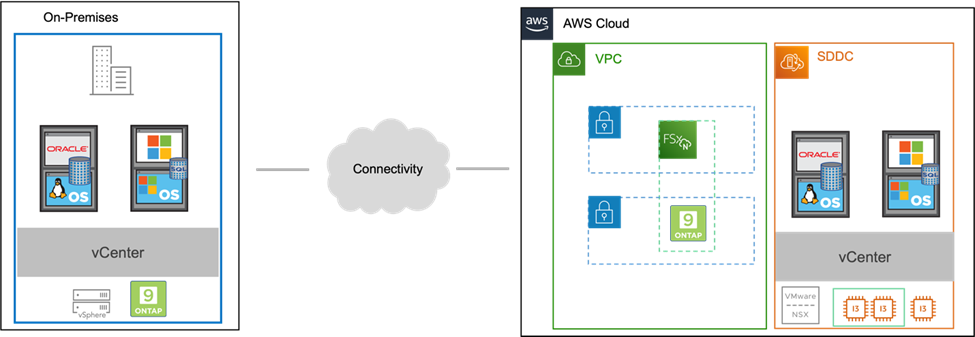
Hypothèses, conditions requises et présentation des composants
Avant de déployer cette solution, vérifiez la présentation des composants, les conditions préalables requises pour déployer la solution et les hypothèses fournies pour documenter cette solution.
Effectuer une reprise après incident avec SnapCenter
Dans cette solution, SnapCenter fournit des snapshots cohérents au niveau des applications pour les données des applications SQL Server et Oracle. Combinée à la technologie SnapMirror, cette configuration assure une réplication des données ultra-rapide entre nos clusters AFF et FSX ONTAP sur site. De plus, Veeam Backup & Replication offre des fonctionnalités de sauvegarde et de restauration pour nos machines virtuelles.
Dans cette section, nous allons parler de la configuration de SnapCenter, SnapMirror et Veeam pour la sauvegarde et la restauration.
Les sections suivantes couvrent la configuration et les étapes nécessaires pour effectuer le basculement sur le site secondaire :
Configurez des relations SnapMirror et des planifications de conservation
SnapCenter peut mettre à jour les relations SnapMirror dans le système de stockage primaire (primaire > miroir) et vers des systèmes de stockage secondaires (primaire > archivage sécurisé) pour l'archivage et la conservation à long terme. Pour ce faire, vous devez établir et initialiser une relation de réplication des données entre un volume de destination et un volume source à l'aide de SnapMirror.
Les systèmes ONTAP source et destination doivent se trouver dans des réseaux qui sont peering via Amazon VPC, une passerelle de transit, AWS Direct Connect ou un VPN AWS.
Les étapes suivantes sont requises pour la configuration des relations SnapMirror entre un système ONTAP sur site et FSX ONTAP :

|
Reportez-vous à la "FSX pour ONTAP – Guide de l'utilisateur ONTAP" Pour plus d'informations sur la création de relations SnapMirror avec FSX. |
Enregistrer les interfaces logiques intercluster source et destination
Pour le système ONTAP source résidant sur site, vous pouvez récupérer les informations LIF inter-cluster depuis System Manager ou depuis l'interface de ligne de commandes.
-
Dans ONTAP System Manager, accédez à la page Network Overview et récupérez les adresses IP de type intercluster configurées pour communiquer avec le VPC AWS où FSX est installé.

-
Pour récupérer les adresses IP intercluster pour FSX, connectez-vous à l'interface de ligne de commande et exécutez la commande suivante :
FSx-Dest::> network interface show -role intercluster

Établir le peering de cluster entre ONTAP et FSX
Pour établir le peering de cluster entre clusters ONTAP, une phrase secrète unique saisie au niveau du cluster ONTAP à l'origine doit être confirmée dans l'autre cluster.
-
Configurez le peering sur le cluster FSX de destination à l'aide de l'
cluster peer createcommande. Lorsque vous y êtes invité, saisissez une phrase secrète unique utilisée ultérieurement sur le cluster source pour finaliser le processus de création.FSx-Dest::> cluster peer create -address-family ipv4 -peer-addrs source_intercluster_1, source_intercluster_2 Enter the passphrase: Confirm the passphrase:
-
Sur le cluster source, vous pouvez établir la relation de pairs de cluster à l'aide de ONTAP System Manager ou de l'interface de ligne de commandes. Dans ONTAP System Manager, accédez à protection > Présentation et sélectionnez Peer Cluster.
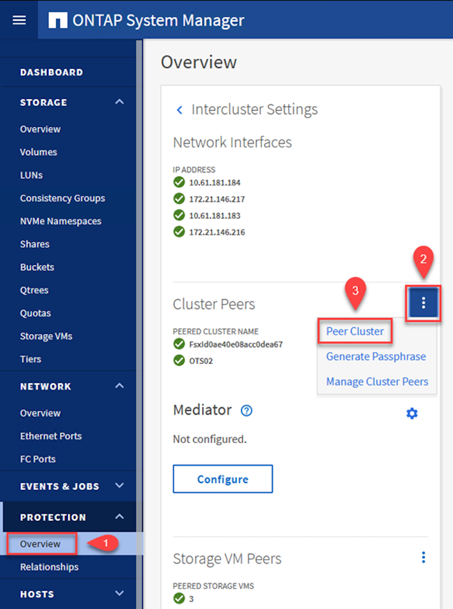
-
Dans la boîte de dialogue Peer Cluster, saisissez les informations requises :
-
Saisissez la phrase de passe utilisée pour établir la relation de cluster homologue sur le cluster FSX de destination.
-
Sélectionnez
Yespour établir une relation chiffrée. -
Entrer les adresses IP du LIF intercluster du cluster FSX de destination.
-
Cliquez sur initier le peering de cluster pour finaliser le processus.

-
-
Vérifiez l'état de la relation cluster peer à partir du cluster FSX avec la commande suivante :
FSx-Dest::> cluster peer show
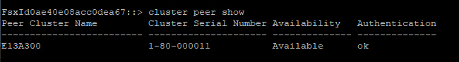
Établir une relation de peering de SVM
L'étape suivante consiste à configurer une relation de SVM entre les machines virtuelles de stockage de destination et source qui contiennent les volumes qui seront dans les relations SnapMirror.
-
Depuis le cluster FSX source, utiliser la commande suivante depuis l'interface de ligne de commande afin de créer la relation SVM peer :
FSx-Dest::> vserver peer create -vserver DestSVM -peer-vserver Backup -peer-cluster OnPremSourceSVM -applications snapmirror
-
Depuis le cluster ONTAP source, acceptez la relation de peering avec ONTAP System Manager ou l'interface de ligne de commandes.
-
Dans ONTAP System Manager, accédez à protection > Présentation et sélectionnez des VM de stockage homologues sous les pairs de machines virtuelles de stockage.
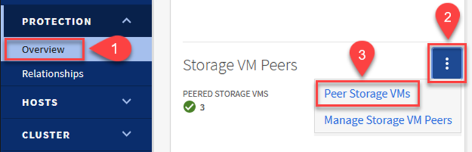
-
Dans la boîte de dialogue de la VM de stockage homologue, remplissez les champs requis :
-
La VM de stockage source
-
Cluster destination
-
L'VM de stockage de destination

-
-
Cliquez sur Peer Storage VM pour terminer le processus de peering de SVM.
Création d'une règle de conservation des snapshots
SnapCenter gère les planifications de conservation pour les sauvegardes qui existent sous forme de copies Snapshot sur le système de stockage primaire. Ceci est établi lors de la création d'une règle dans SnapCenter. SnapCenter ne gère pas de stratégies de conservation pour les sauvegardes conservées sur des systèmes de stockage secondaires. Ces règles sont gérées séparément via une règle SnapMirror créée sur le cluster FSX secondaire et associée aux volumes de destination faisant partie d'une relation SnapMirror avec le volume source.
Lors de la création d'une règle SnapCenter, vous avez la possibilité de spécifier une étiquette de règle secondaire ajoutée au label SnapMirror de chaque Snapshot généré lors de la création d'une sauvegarde SnapCenter.
|
|
Sur le stockage secondaire, ces étiquettes sont mises en correspondance avec les règles de règle associées au volume de destination pour assurer la conservation des snapshots. |
L'exemple suivant montre une étiquette SnapMirror présente sur tous les snapshots générés dans le cadre d'une règle utilisée pour les sauvegardes quotidiennes de notre base de données SQL Server et des volumes des journaux.
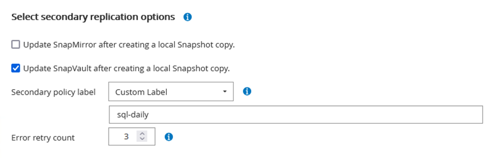
Pour plus d'informations sur la création de stratégies SnapCenter pour une base de données SQL Server, reportez-vous au "Documentation SnapCenter".
Vous devez d'abord créer une règle SnapMirror avec des règles qui imposent le nombre de copies Snapshot à conserver.
-
Création de la règle SnapMirror sur le cluster FSX
FSx-Dest::> snapmirror policy create -vserver DestSVM -policy PolicyName -type mirror-vault -restart always
-
Ajoutez des règles à la règle avec des étiquettes SnapMirror qui correspondent aux étiquettes de règles secondaires spécifiées dans les règles de SnapCenter.
FSx-Dest::> snapmirror policy add-rule -vserver DestSVM -policy PolicyName -snapmirror-label SnapMirrorLabelName -keep #ofSnapshotsToRetain
Le script suivant fournit un exemple de règle qui peut être ajoutée à une règle :
FSx-Dest::> snapmirror policy add-rule -vserver sql_svm_dest -policy Async_SnapCenter_SQL -snapmirror-label sql-ondemand -keep 15
Créer des règles supplémentaires pour chaque étiquette SnapMirror et le nombre de snapshots à conserver (période de conservation).
Créer des volumes de destination
Pour créer un volume de destination sur FSX qui sera le destinataire des copies snapshot à partir de nos volumes source, exécutez la commande suivante sur FSX ONTAP :
FSx-Dest::> volume create -vserver DestSVM -volume DestVolName -aggregate DestAggrName -size VolSize -type DP
Création des relations SnapMirror entre les volumes source et de destination
Pour créer une relation SnapMirror entre un volume source et un volume de destination, exécutez la commande suivante sur FSX ONTAP :
FSx-Dest::> snapmirror create -source-path OnPremSourceSVM:OnPremSourceVol -destination-path DestSVM:DestVol -type XDP -policy PolicyName
Initialiser les relations SnapMirror
Initialiser la relation SnapMirror Ce processus lance un nouveau snapshot généré à partir du volume source et le copie vers le volume de destination.
FSx-Dest::> snapmirror initialize -destination-path DestSVM:DestVol
Déploiement et configuration de Windows SnapCenter Server sur site
Déploiement de Windows SnapCenter Server sur site
Cette solution utilise NetApp SnapCenter pour effectuer des sauvegardes cohérentes au niveau des applications de bases de données SQL Server et Oracle. Associé à Veeam Backup & Replication pour la sauvegarde des VMDK de machines virtuelles, cette solution assure une reprise après incident complète pour les data centers sur site et dans le cloud.
Le logiciel SnapCenter est disponible sur le site du support NetApp et peut être installé sur les systèmes Microsoft Windows résidant dans un domaine ou un groupe de travail. Un guide de planification détaillé et des instructions d'installation sont disponibles sur le "Centre de documentation NetApp".
Le logiciel SnapCenter est disponible à l'adresse "ce lien".
Une fois installé, vous pouvez accéder à la console SnapCenter à partir d'un navigateur Web en utilisant https://Virtual_Cluster_IP_or_FQDN:8146.
Une fois connecté à la console, vous devez configurer SnapCenter pour la sauvegarde des bases de données SQL Server et Oracle.
Ajout de contrôleurs de stockage à SnapCenter
Pour ajouter des contrôleurs de stockage à SnapCenter, procédez comme suit :
-
Dans le menu de gauche, sélectionnez systèmes de stockage, puis cliquez sur Nouveau pour lancer le processus d'ajout de vos contrôleurs de stockage à SnapCenter.

-
Dans la boîte de dialogue Ajouter un système de stockage, ajoutez l'adresse IP de gestion du cluster ONTAP local sur site, ainsi que le nom d'utilisateur et le mot de passe. Cliquez ensuite sur Submit pour lancer la détection du système de stockage.
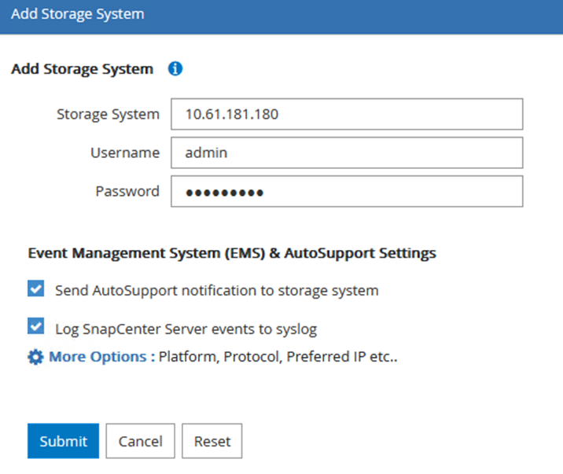
-
Répétez cette procédure pour ajouter le système FSX ONTAP à SnapCenter. Dans ce cas, sélectionnez plus d'options en bas de la fenêtre Add Storage System (Ajouter un système de stockage), puis cliquez sur la case à cocher for Secondary afin de désigner le système FSX comme système de stockage secondaire mis à jour avec les copies SnapMirror ou nos snapshots de sauvegarde primaires.
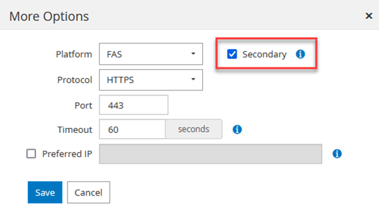
Pour plus d'informations sur l'ajout de systèmes de stockage à SnapCenter, reportez-vous à la documentation à l'adresse "ce lien".
Ajouter des hôtes à SnapCenter
L'étape suivante consiste à ajouter des serveurs d'applications hôtes à SnapCenter. Le processus est similaire pour SQL Server et Oracle.
-
Dans le menu de gauche, sélectionnez hosts, puis cliquez sur Add pour lancer le processus d'ajout de contrôleurs de stockage à SnapCenter.
-
Dans la fenêtre Ajouter des hôtes, ajoutez le type d'hôte, le nom d'hôte et les informations d'identification du système hôte. Sélectionnez le type de plug-in. Pour SQL Server, sélectionnez le plug-in Microsoft Windows et Microsoft SQL Server.

-
Pour Oracle, renseignez les champs requis dans la boîte de dialogue Ajouter un hôte et cochez la case du plug-in Oracle Database. Cliquez ensuite sur Envoyer pour lancer le processus de détection et ajouter l'hôte à SnapCenter.
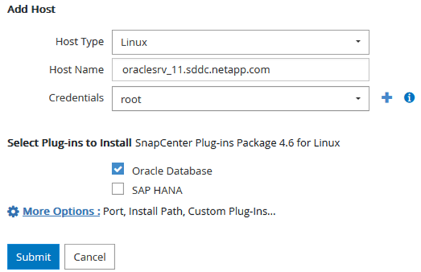
Création de règles SnapCenter
Les stratégies définissent les règles spécifiques à suivre pour une tâche de sauvegarde. Notamment le calendrier de sauvegarde, le type de réplication et la manière dont SnapCenter gère la sauvegarde et la troncation des journaux de transactions.
Vous pouvez accéder aux stratégies dans la section Paramètres du client Web SnapCenter.

Pour obtenir des informations complètes sur la création de stratégies pour les sauvegardes SQL Server, reportez-vous à la section "Documentation SnapCenter".
Pour obtenir des informations complètes sur la création de stratégies pour les sauvegardes Oracle, reportez-vous au "Documentation SnapCenter".
Notes:
-
Au fur et à mesure que vous progressez dans l'assistant de création de règles, prenez note spéciale de la section réplication. Dans cette section, vous devez spécifier les types de copies SnapMirror secondaires que vous souhaitez effectuer pendant le processus de sauvegarde.
-
Le paramètre « mettre à jour SnapMirror après la création d'une copie Snapshot locale » fait référence à la mise à jour d'une relation SnapMirror lorsqu'il existe entre deux machines virtuelles de stockage résidant sur le même cluster.
-
Le paramètre « Update SnapVault après création d'une copie Snapshot locale » permet de mettre à jour une relation SnapMirror entre deux clusters distincts et entre un système ONTAP sur site et Cloud Volumes ONTAP ou FSxN.
L'image suivante montre les options ci-dessus et leur apparence dans l'assistant de stratégie de sauvegarde.

Créer des groupes de ressources SnapCenter
Les groupes de ressources vous permettent de sélectionner les ressources de base de données que vous souhaitez inclure dans vos sauvegardes et les stratégies suivies pour ces ressources.
-
Accédez à la section Ressources du menu de gauche.
-
En haut de la fenêtre, sélectionnez le type de ressource à utiliser (dans ce cas, Microsoft SQL Server), puis cliquez sur Nouveau groupe de ressources.

La documentation SnapCenter fournit des informations détaillées sur la création de groupes de ressources pour les bases de données SQL Server et Oracle.
Pour la sauvegarde des ressources SQL, suivez "ce lien".
Pour la sauvegarde des ressources Oracle, suivez "ce lien".
Déploiement et configuration de Veeam Backup Server
Le logiciel Veeam Backup & Replication est utilisé dans la solution pour sauvegarder nos machines virtuelles d'applications et archiver une copie des sauvegardes dans un compartiment Amazon S3 à l'aide d'un référentiel de sauvegarde scale-out Veeam. Veeam est déployé sur un serveur Windows dans cette solution. Pour des conseils spécifiques sur le déploiement de Veeam, reportez-vous au "Documentation technique sur le centre d'assistance Veeam".
Configurez un référentiel de sauvegarde scale-out Veeam
Une fois que vous avez déployé et sous licence le logiciel, vous pouvez créer un référentiel de sauvegarde scale-out (SOBR) en tant que stockage cible pour les tâches de sauvegarde. Vous devez également inclure un compartiment S3 comme sauvegarde des données de machines virtuelles hors site pour la reprise après incident.
Consultez les conditions préalables suivantes avant de commencer.
-
Créez un partage de fichiers SMB sur votre système ONTAP sur site en tant que stockage cible pour les sauvegardes.
-
Créez un compartiment Amazon S3 à inclure dans le volume de stockage. Il s'agit d'un référentiel pour les sauvegardes hors site.
Ajout du stockage ONTAP à Veeam
Tout d'abord, ajoutez le cluster de stockage ONTAP et le système de fichiers SMB/NFS associé en tant qu'infrastructure de stockage dans Veeam.
-
Ouvrez la console Veeam et connectez-vous. Accédez à Storage Infrastructure, puis sélectionnez Add Storage.
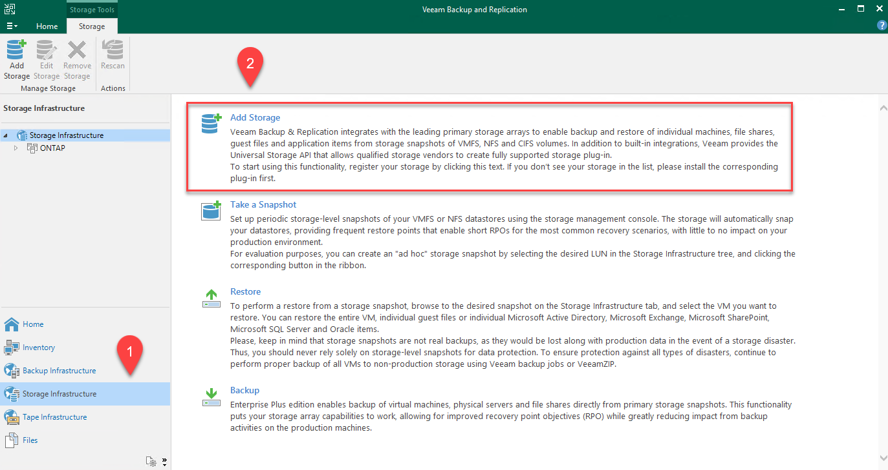
-
Dans l'assistant d'ajout de stockage, sélectionnez NetApp comme fournisseur de stockage, puis sélectionnez Data ONTAP.
-
Entrez l'adresse IP de gestion et cochez la case filer NAS. Cliquez sur Suivant.

-
Ajoutez vos identifiants pour accéder au cluster ONTAP.

-
Sur la page NAS Filer, choisissez les protocoles à analyser et sélectionnez Suivant.

-
Complétez les pages appliquer et Résumé de l'assistant et cliquez sur Terminer pour lancer le processus de détection du stockage. Une fois le scan terminé, on ajoute le cluster ONTAP ainsi que les filers NAS en tant que ressources disponibles.
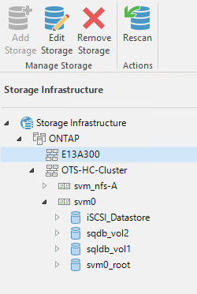
-
Créez un référentiel de sauvegarde à l'aide des partages NAS récemment découverts. Dans Backup Infrastructure, sélectionnez Sauvegarder les référentiels et cliquez sur l'élément de menu Ajouter un référentiel.

-
Suivez toutes les étapes de l'Assistant Nouveau référentiel de sauvegarde pour créer le référentiel. Pour plus d'informations sur la création des référentiels de sauvegarde Veeam, consultez le "Documentation Veeam".

Ajoutez le compartiment Amazon S3 en tant que référentiel de sauvegarde
L'étape suivante consiste à ajouter le stockage Amazon S3 en tant que référentiel de sauvegarde.
-
Accédez à Backup Infrastructure > référentiels de sauvegarde. Cliquez sur Ajouter un référentiel.

-
Dans l'assistant Ajouter un référentiel de sauvegarde, sélectionnez stockage objet, puis Amazon S3. L'assistant Nouveau référentiel de stockage objet démarre.

-
Fournissez un nom pour votre référentiel de stockage objet et cliquez sur Next (Suivant).
-
Dans la section suivante, indiquez vos identifiants. Vous avez besoin d'une clé d'accès et d'une clé secrète AWS.

-
Une fois la configuration Amazon chargée, choisissez votre data Center, votre compartiment et votre dossier, puis cliquez sur « Apply » (appliquer). Enfin, cliquez sur Terminer pour fermer l'assistant.
Création d'un référentiel de sauvegarde scale-out
Maintenant que nous avons ajouté nos référentiels de stockage à Veeam, nous pouvons créer la solution SOBR afin de hiérarchiser automatiquement les copies de sauvegarde dans notre stockage objet Amazon S3 hors site pour la reprise après incident.
-
Dans l'infrastructure de sauvegarde, sélectionnez référentiels scale-out, puis cliquez sur l'élément de menu Ajouter un référentiel scale-out.

-
Dans le nouveau référentiel de sauvegarde scale-out, indiquez un nom pour le SOBR et cliquez sur Suivant.
-
Pour le niveau de performances, choisissez le référentiel de sauvegarde contenant le partage SMB résidant sur votre cluster ONTAP local.

-
Pour la stratégie de placement, choisissez l'emplacement des données ou les performances en fonction de vos besoins. Sélectionnez Next (Suivant).
-
Pour le niveau de capacité, nous avons étendu la solution SOBR avec le stockage objet Amazon S3. Pour les besoins de reprise après incident, sélectionnez Copier les sauvegardes vers le stockage objet dès leur création afin de fournir nos sauvegardes secondaires dans les délais.

-
Enfin, sélectionnez appliquer et Terminer pour finaliser la création du SOBR.
Création des tâches de référentiel de sauvegarde scale-out
La dernière étape de configuration de Veeam consiste à créer des tâches de sauvegarde en utilisant le SOBR nouvellement créé comme destination de sauvegarde. La création de travaux de sauvegarde fait partie intégrante du répertoire de tout administrateur de stockage et nous ne abordons pas les étapes détaillées ici. Pour plus d'informations sur la création de tâches de sauvegarde dans Veeam, consultez le "Documentation technique du centre d'aide Veeam".
Configuration et outils de sauvegarde et de restauration BlueXP
Pour effectuer un basculement des VM applicatives et des volumes de base de données vers les services VMware Cloud volumes exécutés dans AWS, vous devez installer et configurer une instance en cours d'exécution de SnapCenter Server et Veeam Backup and Replication Server. Une fois le basculement terminé, vous devez également configurer ces outils pour reprendre les opérations de sauvegarde normales jusqu'à ce que la restauration du data Center sur site soit planifiée et exécutée.
Déploiement d'un serveur Windows SnapCenter secondaire
Le serveur SnapCenter est déployé dans le SDDC VMware Cloud ou installé sur une instance EC2 résidant dans un VPC avec une connectivité réseau vers l'environnement VMware Cloud.
Le logiciel SnapCenter est disponible sur le site du support NetApp et peut être installé sur les systèmes Microsoft Windows résidant dans un domaine ou un groupe de travail. Un guide de planification détaillé et des instructions d'installation sont disponibles sur le "Centre de documentation NetApp".
Le logiciel SnapCenter est disponible sur la page "ce lien".
Configurez le serveur SnapCenter secondaire
Pour restaurer les données d'application en miroir vers FSX ONTAP, vous devez d'abord effectuer une restauration complète de la base de données SnapCenter sur site. Une fois ce processus terminé, la communication avec les machines virtuelles est rétablie, et les sauvegardes des applications peuvent maintenant reprendre en utilisant FSX ONTAP comme stockage primaire.
Pour ce faire, vous devez effectuer les opérations suivantes sur le serveur SnapCenter :
-
Configurez le nom de l'ordinateur pour qu'il soit identique au serveur SnapCenter sur site d'origine.
-
Configurez le réseau pour communiquer avec VMware Cloud et l'instance FSX ONTAP.
-
Terminez la procédure de restauration de la base de données SnapCenter.
-
Vérifiez que SnapCenter est en mode reprise après incident pour vous assurer que FSX est désormais le stockage principal pour les sauvegardes.
-
Confirmer que la communication est rétablie avec les machines virtuelles restaurées.
Pour plus d'informations sur ces étapes, reportez-vous à la section à "Processus de restauration de base de données SnapCenter".
Déploiement du serveur de sauvegarde et de réplication Veeam secondaire
Vous pouvez installer le serveur Veeam Backup & Replication sur un serveur Windows dans le cloud VMware sur AWS ou sur une instance EC2. Pour obtenir des conseils détaillés sur la mise en œuvre, reportez-vous au "Documentation technique du centre d'aide Veeam".
Configuration du serveur Veeam Backup etamp secondaire ; Replication Server
Pour effectuer une restauration des machines virtuelles qui ont été sauvegardées sur le stockage Amazon S3, vous devez installer Veeam Server sur un serveur Windows et le configurer pour qu'il communique avec VMware Cloud, FSX ONTAP et le compartiment S3 qui contient le référentiel de sauvegarde d'origine. Le système informatique doit également configurer un nouveau référentiel de sauvegarde sur FSX ONTAP afin de réaliser de nouvelles sauvegardes des machines virtuelles après leur restauration.
Pour effectuer ce processus, les éléments suivants doivent être effectués :
-
Configuration du réseau pour communiquer avec VMware Cloud, FSX ONTAP et un compartiment S3 contenant le référentiel de sauvegarde d'origine
-
Configurez un partage SMB sur FSX ONTAP en tant que nouveau référentiel de sauvegarde.
-
Montez le compartiment S3 d'origine utilisé dans le référentiel de sauvegarde scale-out sur site.
-
Après la restauration de la machine virtuelle, établir de nouvelles tâches de sauvegarde afin de protéger les machines virtuelles SQL et Oracle.
Pour plus d'informations sur la restauration des VM à l'aide de Veeam, reportez-vous à la section "Restauration des VM applications avec Veeam Full Restore".
Sauvegarde des bases de données SnapCenter pour la reprise après incident
SnapCenter permet la sauvegarde et la récupération de sa base de données MySQL sous-jacente et des données de configuration afin de restaurer le serveur SnapCenter en cas d'incident. Pour notre solution, nous avons restauré la base de données et la configuration d'SnapCenter sur une instance EC2 AWS résidant sur notre VPC. Pour plus d'informations sur cette étape, reportez-vous à la section "ce lien".
Conditions préalables à la sauvegarde SnapCenter
Les prérequis suivants sont requis pour la sauvegarde SnapCenter :
-
Un partage de volume et SMB créé sur le système ONTAP sur site pour localiser la base de données et les fichiers de configuration sauvegardés.
-
Relation SnapMirror entre le système ONTAP sur site et FSX ou CVO dans le compte AWS. Cette relation est utilisée pour le transport de l'instantané contenant la base de données SnapCenter sauvegardée et les fichiers de configuration.
-
Windows Server installé dans le compte cloud, soit sur une instance EC2, soit sur une VM dans le SDDC VMware Cloud.
-
SnapCenter installé sur l'instance Windows EC2 ou le VM dans VMware Cloud.
Récapitulatif du processus de sauvegarde et de restauration SnapCenter
-
Créez un volume sur le système ONTAP sur site pour héberger les fichiers de base de données de sauvegarde et de configuration.
-
Configurer une relation SnapMirror entre le site et FSX/CVO.
-
Montez le partage SMB.
-
Récupérez le jeton d'autorisation de swagger pour effectuer des tâches API.
-
Démarrez le processus de restauration de la base de données.
-
Utilisez l'utilitaire xcopy pour copier le répertoire local du fichier de base de données et de configuration dans le partage SMB.
-
Sur la plateforme FSX, créez un clone du volume ONTAP (copié via SnapMirror depuis sur site).
-
Montez le partage SMB de FSX vers le cloud EC2/VMware.
-
Copiez le répertoire de restauration du partage SMB dans un répertoire local.
-
Exécutez le processus de restauration de SQL Server à partir de swagger.
Sauvegarder la base de données et la configuration de SnapCenter
SnapCenter fournit une interface client Web pour l'exécution des commandes de l'API REST. Pour plus d'informations sur l'accès aux API REST via swagger, consultez la documentation SnapCenter à l'adresse "ce lien".
Connectez-vous à swagger et obtenez le jeton d'autorisation
Une fois que vous avez navigué vers la page swagger, vous devez récupérer un jeton d'autorisation pour lancer le processus de restauration de la base de données.
-
Accédez à la page Web de l'API SnapCenter swagger à l'adresse https://<SnapCenter Server IP>:8146/swagger/.

-
Développez la section Auth et cliquez sur le bouton essayer.
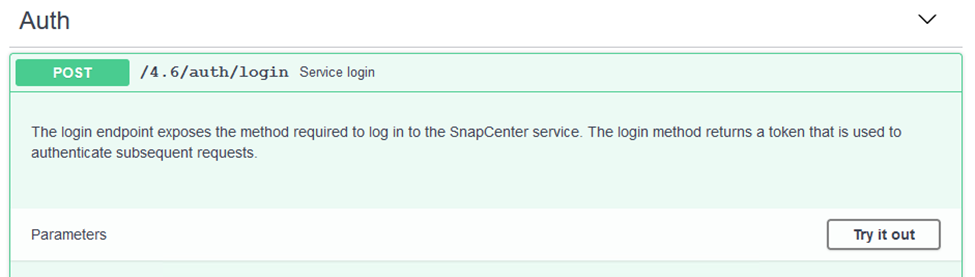
-
Dans la zone UserOperationContext, renseignez les informations d'identification et le rôle SnapCenter, puis cliquez sur Exécuter.

-
Dans le corps de réponse ci-dessous, vous pouvez voir le jeton. Copiez le texte du token pour l'authentification lors de l'exécution du processus de sauvegarde.
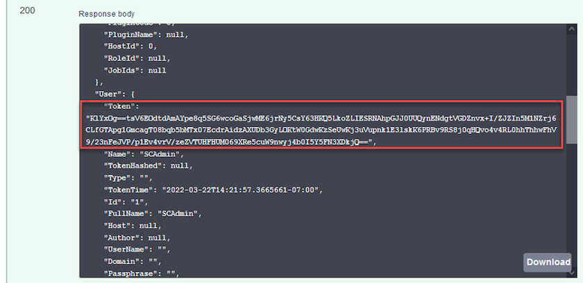
Effectuez une sauvegarde de base de données SnapCenter
Passez ensuite à la zone de reprise sur incident de la page swagger pour lancer le processus de sauvegarde SnapCenter.
-
Développez la zone de reprise après sinistre en cliquant dessus.

-
Développez le
/4.6/disasterrecovery/server/backupEt cliquez sur essayer.
-
Dans la section SmDRBackupRequest, ajoutez le chemin cible local correct et sélectionnez Exécuter pour lancer la sauvegarde de la base de données et de la configuration SnapCenter.
Le processus de sauvegarde ne permet pas de sauvegarder directement les données sur un partage de fichiers NFS ou CIFS. 
Surveillez la procédure de sauvegarde depuis SnapCenter
Connectez-vous à SnapCenter pour consulter les fichiers journaux au démarrage du processus de restauration de la base de données. Dans la section moniteur, vous pouvez afficher les détails de la sauvegarde de reprise après incident du serveur SnapCenter.

Utilisez l'utilitaire XCOPY pour copier le fichier de sauvegarde de la base de données dans le partage SMB
Vous devez ensuite déplacer la sauvegarde du disque local du serveur SnapCenter vers le partage CIFS utilisé pour copier les données dans l'emplacement secondaire situé sur l'instance FSX d'AWS. Utilisez xcopy avec des options spécifiques qui conservent les autorisations des fichiers.
Ouvrez une invite de commande en tant qu'administrateur. Dans l'invite de commande, entrez les commandes suivantes :
xcopy <Source_Path> \\<Destination_Server_IP>\<Folder_Path> /O /X /E /H /K xcopy c:\SC_Backups\SnapCenter_DR \\10.61.181.185\snapcenter_dr /O /X /E /H /K
Basculement
Un incident se produit sur le site primaire
En cas d'incident survenant dans le data Center principal sur site, notre scénario inclut un basculement vers un site secondaire résidant sur l'infrastructure Amazon Web Services à l'aide de VMware Cloud sur AWS. Nous partons du principe que les machines virtuelles et notre cluster ONTAP sur site ne sont plus accessibles. En outre, les machines virtuelles SnapCenter et Veeam ne sont plus accessibles et doivent être reconstruites dans notre site secondaire.
Cette section traite du basculement de notre infrastructure vers le cloud, et aborde les sujets suivants :
-
Restauration de la base de données SnapCenter. Après l'établissement d'un nouveau serveur SnapCenter, restaurez la base de données MySQL et les fichiers de configuration, puis basculez la base de données en mode de reprise après sinistre afin de permettre au stockage FSX secondaire de devenir le périphérique de stockage principal.
-
Restauration des machines virtuelles d'applications à l'aide de Veeam Backup & Replication Connectez le stockage S3 contenant les sauvegardes de machines virtuelles, importez les sauvegardes et restaurez-les dans VMware Cloud sur AWS.
-
Restauration des données applicatives SQL Server à l'aide de SnapCenter
-
Restaurez les données d'application Oracle à l'aide de SnapCenter.
Processus de restauration de la base de données SnapCenter
SnapCenter prend en charge les scénarios de reprise après incident en permettant la sauvegarde et la restauration de sa base de données MySQL et de ses fichiers de configuration. L'administrateur peut ainsi conserver des sauvegardes régulières de la base de données SnapCenter sur le data Center sur site et restaurer ensuite cette base de données vers une base de données SnapCenter secondaire.
Pour accéder aux fichiers de sauvegarde SnapCenter sur le serveur SnapCenter distant, procédez comme suit :
-
Faire un break de la relation SnapMirror depuis le cluster FSX, ce qui fait du volume la lecture/écriture.
-
Créer un serveur CIFS (si nécessaire) et créer un partage CIFS pointant vers la Junction path du volume cloné.
-
Utilisez xcopy pour copier les fichiers de sauvegarde dans un répertoire local sur le système SnapCenter secondaire.
-
Installez SnapCenter v4.6.
-
Assurez-vous que le serveur SnapCenter possède le même FQDN que le serveur d'origine. Cette opération est nécessaire pour que la restauration de la base de données soit réussie.
Pour démarrer le processus de restauration, procédez comme suit :
-
Accédez à la page Web de l'API swagger pour le serveur SnapCenter secondaire et suivez les instructions précédentes pour obtenir un jeton d'autorisation.
-
Accédez à la section récupération après sinistre de la page de swagger, puis sélectionnez
/4.6/disasterrecovery/server/restore, Puis cliquez sur essayer.
-
Collez le jeton d'autorisation et, dans la section SmDRResterRequest, collez le nom de la sauvegarde et le répertoire local sur le serveur SnapCenter secondaire.

-
Cliquez sur le bouton Exécuter pour lancer le processus de restauration.
-
Dans SnapCenter, accédez à la section moniteur pour afficher la progression de la tâche de restauration.

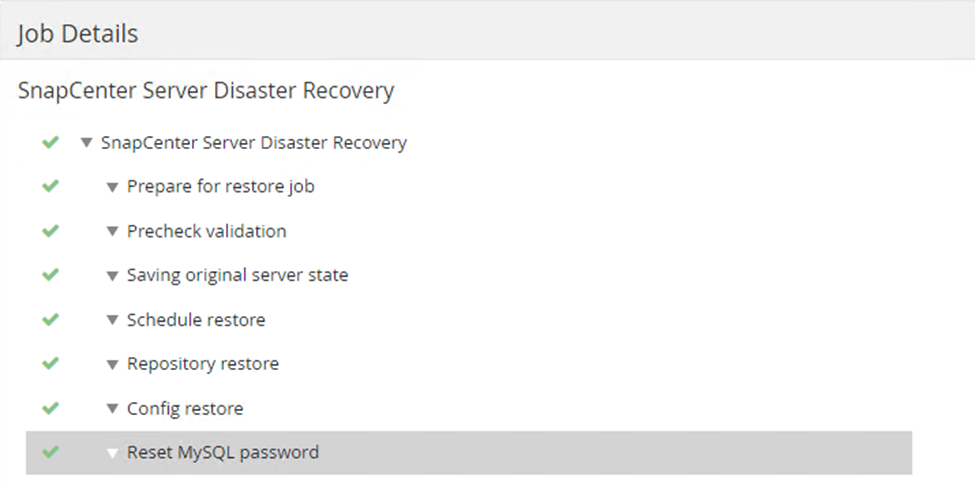
-
Pour activer les restaurations SQL Server à partir du stockage secondaire, vous devez basculer la base de données SnapCenter en mode de reprise après incident. Cette opération est exécutée séparément et lancée sur la page Web de l'API swagger.
-
Accédez à la section reprise sur incident et cliquez sur
/4.6/disasterrecovery/storage. -
Collez le jeton d'autorisation utilisateur.
-
Dans la section SmSetDisasterRecovery ySettingRequest, modifiez
EnableDisasterRecoveràtrue. -
Cliquez sur Exécuter pour activer le mode de reprise après sinistre pour SQL Server.
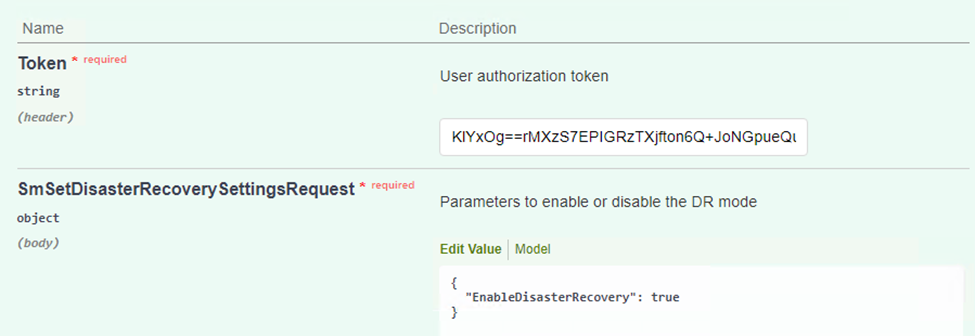
Voir les commentaires concernant les procédures supplémentaires. -
Restauration des VM applications grâce à la restauration complète Veeam
Création d'un référentiel de sauvegardes et importation des sauvegardes à partir de S3
Depuis le serveur Veeam secondaire, importez les sauvegardes depuis le stockage S3 et restaurez les machines virtuelles SQL Server et Oracle sur votre cluster VMware Cloud.
Pour importer les sauvegardes à partir de l'objet S3 inclus dans le référentiel de sauvegarde scale-out sur site, procédez comme suit :
-
Accédez aux référentiels de sauvegarde et cliquez sur Ajouter un référentiel dans le menu supérieur pour lancer l'assistant Ajouter un référentiel de sauvegarde. Sur la première page de l'assistant, sélectionnez stockage objet comme type de référentiel de sauvegarde.

-
Sélectionnez Amazon S3 comme type de stockage objet.
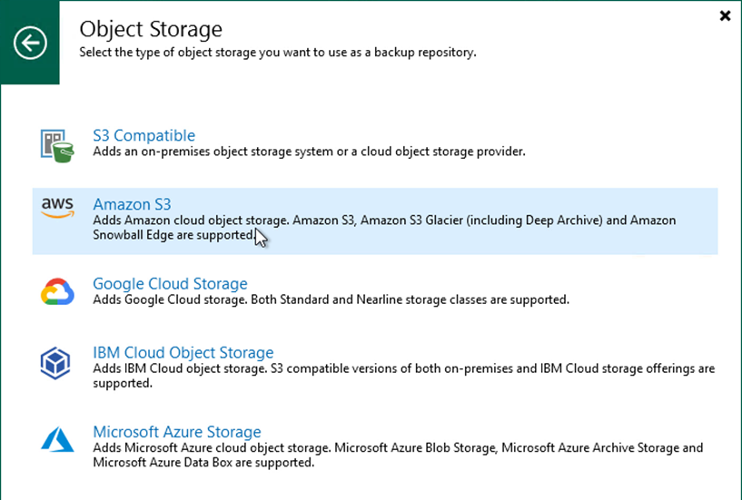
-
Dans la liste d'Amazon Cloud Storage Services, sélectionnez Amazon S3.
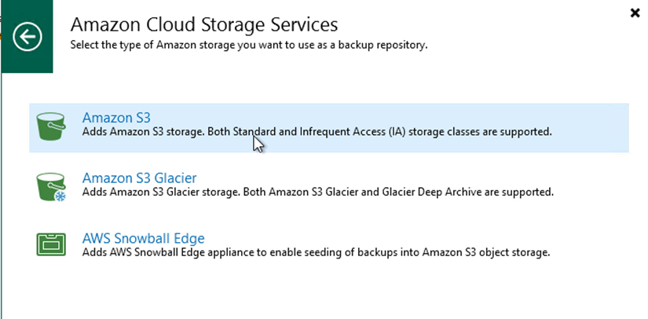
-
Sélectionnez vos identifiants pré-saisis dans la liste déroulante ou ajoutez de nouvelles informations d'identification pour accéder à la ressource de stockage cloud. Cliquez sur Suivant pour continuer.

-
Sur la page compartiment, entrez le data Center, le compartiment, le dossier et les options souhaitées. Cliquez sur appliquer.

-
Enfin, sélectionnez Terminer pour terminer le processus et ajouter le référentiel.
Importation des sauvegardes à partir du stockage objet S3
Pour importer les sauvegardes à partir du référentiel S3 ajouté à la section précédente, procédez comme suit.
-
Dans le référentiel de sauvegardes S3, sélectionnez Importer les sauvegardes pour lancer l'assistant Importer les sauvegardes.

-
Une fois les enregistrements de la base de données pour l'importation créés, sélectionnez Suivant, puis Terminer à l'écran de résumé pour lancer le processus d'importation.

-
Une fois l'importation terminée, vous pouvez restaurer les machines virtuelles dans le cluster VMware Cloud.
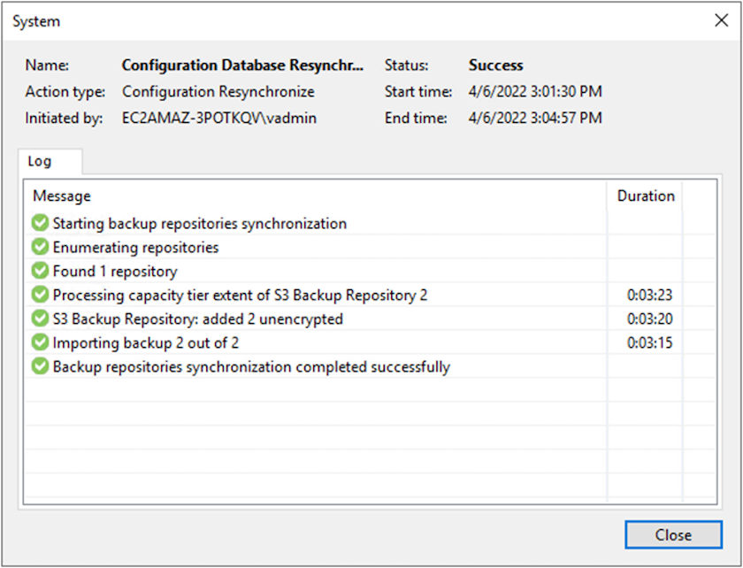
Restauration des VM applicatives avec restauration complète Veeam dans VMware Cloud
Pour restaurer des machines virtuelles SQL et Oracle vers VMware Cloud sur un domaine ou un cluster de workloads avec AWS, effectuez les étapes suivantes.
-
Dans la page d'accueil Veeam, sélectionnez le stockage d'objets contenant les sauvegardes importées, sélectionnez les machines virtuelles à restaurer, puis cliquez avec le bouton droit de la souris et sélectionnez Restaurer la machine virtuelle entière.

-
Sur la première page de l'assistant de restauration complète de VM, modifiez les VM à sauvegarder si vous le souhaitez et sélectionnez Suivant.

-
Sur la page mode de restauration, sélectionnez Restaurer à un nouvel emplacement ou avec des paramètres différents.

-
Sur la page hôte, sélectionnez l'hôte ou le cluster ESXi cible pour restaurer la machine virtuelle.
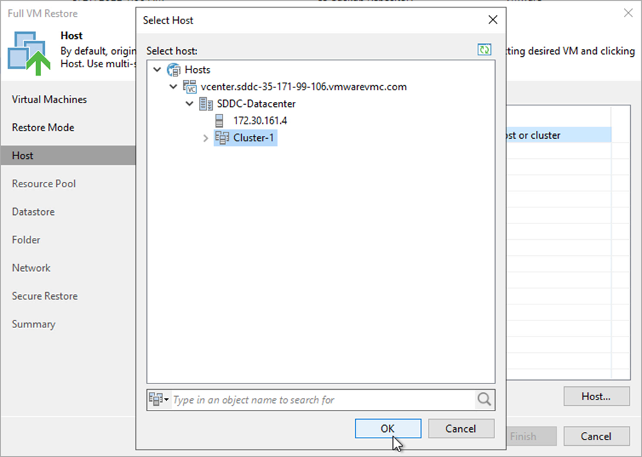
-
Sur la page datastores, sélectionnez l'emplacement du datastore cible pour les fichiers de configuration et le disque dur.

-
Sur la page réseau, mappez les réseaux d'origine sur la machine virtuelle aux réseaux du nouvel emplacement cible.


-
Sélectionnez si vous souhaitez analyser la machine virtuelle restaurée à la recherche d'un programme malveillant, consultez la page de résumé et cliquez sur Terminer pour lancer la restauration.
Restaurez les données applicatives SQL Server
Le processus suivant explique comment restaurer un serveur SQL dans VMware Cloud Services dans AWS en cas d'incident rendant le site inutilisable.
Les prérequis suivants sont supposés être terminés pour poursuivre les étapes de restauration :
-
La machine virtuelle Windows Server a été restaurée dans le SDDC VMware Cloud à l'aide de Veeam Full Restore.
-
Un serveur SnapCenter secondaire a été établi et la restauration et la configuration de la base de données SnapCenter ont été effectuées en suivant les étapes décrites dans la section "Récapitulatif du processus de sauvegarde et de restauration SnapCenter."
VM : configuration post-restauration pour SQL Server VM
Une fois la restauration de la machine virtuelle terminée, vous devez configurer la mise en réseau et d'autres éléments en vue de redécouvrir la machine virtuelle hôte dans SnapCenter.
-
Attribuez de nouvelles adresses IP pour la gestion et iSCSI ou NFS.
-
Joignez l'hôte au domaine Windows.
-
Ajoutez les noms d'hôte au serveur DNS ou au fichier hosts du serveur SnapCenter.
|
|
Si le plug-in SnapCenter a été déployé avec des informations d'identification de domaine différentes du domaine actuel, vous devez modifier le compte connexion pour le service Plug-in pour Windows sur la machine virtuelle SQL Server. Après avoir modifié le compte de connexion, redémarrez SnapCenter les services SMCore, Plug-in pour Windows et Plug-in pour SQL Server. |
|
|
Pour redécouvrir automatiquement les machines virtuelles restaurées dans SnapCenter, le FQDN doit être identique à la machine virtuelle qui a été ajoutée à l'origine au système SnapCenter sur site. |
Configurez le stockage FSX pour la restauration SQL Server
Pour mettre en œuvre le processus de restauration de reprise après incident pour une machine virtuelle SQL Server, vous devez interrompre la relation SnapMirror existante à partir du cluster FSX et accorder l'accès au volume. Pour ce faire, procédez comme suit.
-
Pour interrompre la relation SnapMirror existante pour les volumes de base de données SQL Server et de journaux, exécutez la commande suivante à partir de la CLI FSX :
FSx-Dest::> snapmirror break -destination-path DestSVM:DestVolName
-
Autoriser l'accès à la LUN en créant un groupe initiateur contenant l'IQN iSCSI de la machine virtuelle SQL Server Windows :
FSx-Dest::> igroup create -vserver DestSVM -igroup igroupName -protocol iSCSI -ostype windows -initiator IQN
-
Enfin, mappez les LUN sur le groupe initiateur que vous venez de créer :
FSx-Dest::> lun mapping create -vserver DestSVM -path LUNPath igroup igroupName
-
Pour trouver le nom du chemin d'accès, exécutez le
lun showcommande.
Configurer la machine virtuelle Windows pour l'accès iSCSI et découvrir les systèmes de fichiers
-
À partir de la VM SQL Server, configurez votre carte réseau iSCSI pour communiquer sur le Port Group VMware qui a été établi avec la connectivité aux interfaces cibles iSCSI de votre instance FSX.
-
Ouvrez l'utilitaire iSCSI Initiator Properties (Propriétés de l'initiateur iSCSI) et effacez les anciens paramètres de connectivité dans les onglets Discovery, Favorite Targets (cibles favorites) et Targets (cibles).
-
Recherchez les adresses IP permettant d'accéder à l'interface logique iSCSI sur l'instance/le cluster FSX. Cela peut être trouvé dans la console AWS, sous Amazon FSX > ONTAP > Storage Virtual machines.

-
Dans l'onglet découverte, cliquez sur Discover Portal et entrez les adresses IP de vos cibles iSCSI FSX.


-
Dans l'onglet cible, cliquez sur connecter, sélectionnez Activer le multichemin si nécessaire pour votre configuration, puis cliquez sur OK pour vous connecter à la cible.

-
Ouvrez l'utilitaire gestion de l'ordinateur et connectez les disques. Vérifiez qu'ils conservent les mêmes lettres de lecteur qu'ils étaient auparavant.

Reliez les bases de données SQL Server
-
À partir de la VM SQL Server, ouvrez Microsoft SQL Server Management Studio et sélectionnez attacher pour démarrer le processus de connexion à la base de données.

-
Cliquez sur Ajouter et naviguez jusqu'au dossier contenant le fichier de base de données primaire SQL Server, sélectionnez-le, puis cliquez sur OK.
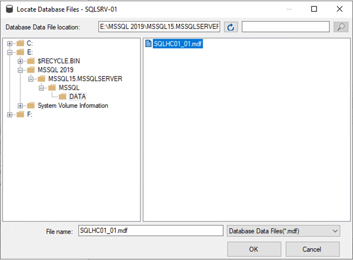
-
Si les journaux de transactions se trouvent sur un lecteur distinct, choisissez le dossier qui contient le journal de transactions.
-
Lorsque vous avez terminé, cliquez sur OK pour joindre la base de données.

Confirmez la communication SnapCenter avec le plug-in SQL Server
Une fois la base de données SnapCenter restaurée à son état précédent, elle redécouvre automatiquement les hôtes SQL Server. Pour que cela fonctionne correctement, gardez à l'esprit les conditions préalables suivantes :
-
SnapCenter doit être placé en mode de reprise après incident. Ceci peut être réalisé via l'API swagger ou dans Paramètres globaux sous récupération après sinistre.
-
Le FQDN de SQL Server doit être identique à l'instance qui s'exécutait dans le data Center sur site.
-
La relation SnapMirror d'origine doit être rompue.
-
Les LUN contenant la base de données doivent être montés sur l'instance SQL Server et la base de données attachée.
Pour confirmer que SnapCenter est en mode reprise après sinistre, accédez à Paramètres depuis le client Web SnapCenter. Accédez à l'onglet Paramètres globaux, puis cliquez sur reprise après sinistre. Assurez-vous que la case Activer la reprise après sinistre est activée.

Restaurez les données de l'application Oracle
Le processus suivant explique comment restaurer les données d'application Oracle dans VMware Cloud Services dans AWS en cas d'incident rendant le site inutilisable.
Pour continuer les étapes de récupération, suivez les conditions préalables suivantes :
-
La machine virtuelle du serveur Oracle Linux a été restaurée dans le SDDC VMware Cloud à l'aide de Veeam Full Restore.
-
Un serveur SnapCenter secondaire a été établi et la base de données SnapCenter et les fichiers de configuration ont été restaurés à l'aide des étapes décrites dans cette section "Récapitulatif du processus de sauvegarde et de restauration SnapCenter."
Configurer FSX pour la restauration Oracle – interrompre la relation SnapMirror
Pour rendre les volumes de stockage secondaire hébergés sur l'instance FSxN accessibles aux serveurs Oracle, vous devez d'abord interrompre la relation SnapMirror existante.
-
Après avoir ouvert une session dans la CLI FSX, exécutez la commande suivante pour afficher les volumes filtrés par le nom correct.
FSx-Dest::> volume show -volume VolumeName*
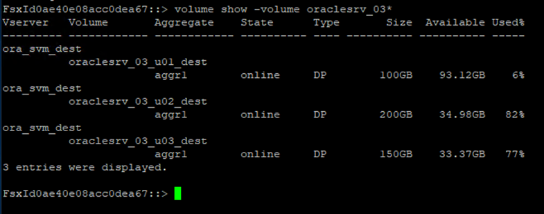
-
Exécutez la commande suivante pour interrompre les relations SnapMirror existantes.
FSx-Dest::> snapmirror break -destination-path DestSVM:DestVolName
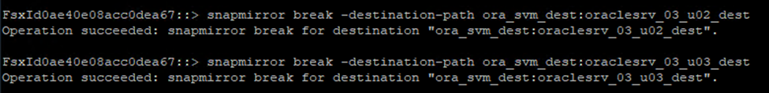
-
Mettez à jour le chemin de jonction dans le client Web Amazon FSX :

-
Ajoutez le nom du chemin de jonction et cliquez sur mettre à jour. Préciser cette Junction path lors du montage du volume NFS depuis le serveur Oracle.

Montez les volumes NFS sur Oracle Server
Dans Cloud Manager, vous pouvez obtenir la commande mount avec l'adresse IP correcte de la LIF NFS pour le montage des volumes NFS qui contiennent les fichiers et les journaux de la base de données Oracle.
-
Dans Cloud Manager, accédez à la liste des volumes de votre cluster FSX.

-
Dans le menu d'action, sélectionnez la commande Mount pour afficher et copier la commande mount à utiliser sur notre serveur Oracle Linux.

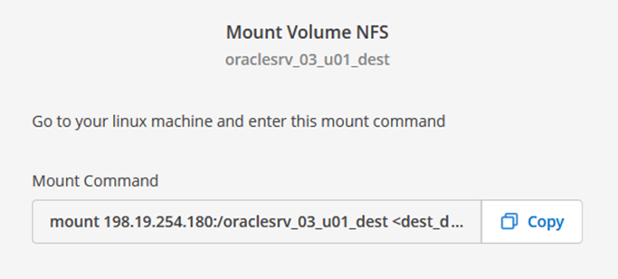
-
Montez le système de fichiers NFS sur le serveur Oracle Linux. Les répertoires de montage du partage NFS existent déjà sur l'hôte Oracle Linux.
-
À partir du serveur Oracle Linux, utilisez la commande mount pour monter les volumes NFS.
FSx-Dest::> mount -t oracle_server_ip:/junction-path
Répétez cette étape pour chaque volume associé aux bases de données Oracle.
Pour rendre le montage NFS persistant au redémarrage, modifiez le /etc/fstabfichier à inclure les commandes de montage. -
Redémarrez le serveur Oracle. Les bases de données Oracle doivent démarrer normalement et être disponibles pour une utilisation.
Du rétablissement
Une fois le processus de basculement terminé avec succès dans cette solution, SnapCenter et Veeam reprendre leurs fonctions de sauvegarde s'exécutant dans AWS, et FSX pour ONTAP est désormais désigné comme stockage principal sans relation SnapMirror avec le data Center sur site d'origine. Une fois le fonctionnement normal rétabli sur site, vous pouvez utiliser un processus identique à celui décrit dans la présente documentation pour reproduire les données sur le système de stockage ONTAP sur site.
Comme indiqué dans cette documentation, vous pouvez configurer SnapCenter de manière à mettre en miroir les volumes de données d'application de FSX pour ONTAP vers un système de stockage ONTAP résidant sur site. De la même façon, vous pouvez configurer Veeam pour répliquer les copies de sauvegarde vers Amazon S3 à l'aide d'un référentiel de sauvegarde scale-out. Ainsi, ces sauvegardes sont accessibles à un serveur de sauvegarde Veeam résidant dans le data Center sur site.
Le basculement automatique ne fait pas partie du périmètre de ces documents, mais le retour arrière diffère légèrement du processus détaillé présenté ici.
Conclusion
Le cas d'utilisation présenté dans cette documentation est axé sur les technologies de reprise sur incident qui ont fait leurs preuves et qui mettent en avant l'intégration entre NetApp et VMware. Les systèmes de stockage NetApp ONTAP fournissent des technologies de mise en miroir des données éprouvées qui permettent aux entreprises de concevoir des solutions de reprise après incident s'intégrant aux technologies ONTAP et sur site des principaux fournisseurs cloud.
La solution FSX pour ONTAP sur AWS est un outil qui permet une intégration transparente avec SnapCenter et SyncMirror pour la réplication des données d'application vers le cloud. Veeam Backup & Replication est une autre technologie connue qui s'intègre bien aux systèmes de stockage NetApp ONTAP et peut fournir un basculement vers le stockage natif vSphere.
Cette solution de reprise après incident a présentée un stockage « Guest Connect » à partir d'un système ONTAP hébergeant les données d'applications SQL Server et Oracle. SnapCenter avec SnapMirror constitue une solution simple à gérer pour protéger les volumes d'applications dans les systèmes ONTAP et les répliquer vers FSX ou CVO résidant dans le cloud. SnapCenter est une solution de reprise d'activité pour le basculement de toutes les données applicatives vers VMware Cloud sur AWS.
Où trouver des informations complémentaires
Pour en savoir plus sur les informations données dans ce livre blanc, consultez ces documents et/ou sites web :
-
Liens vers la documentation de la solution